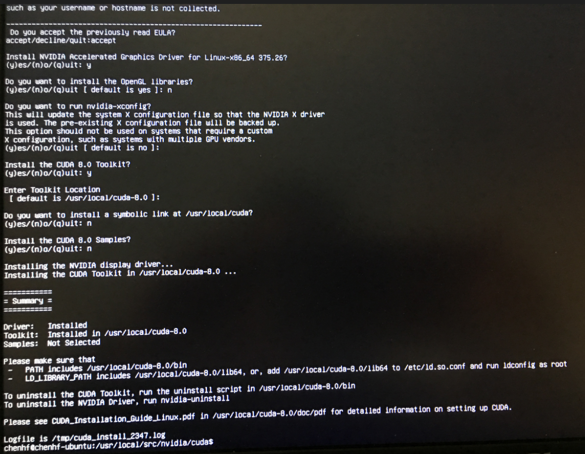

ian的笔记
Anaconda+Tensorflow环境安装与配置
转载请注明出处：http://www.cnblogs.com/willnote/p/6746499.html
教程第一步配置声明：(小米pro笔记本)ubuntu16.04+mx150显卡(这里仅教程此版本的ubuntu)
ubuntu 16.04安装Nvidia显卡驱动(NVIDIA- 384.98)
PS：（Warnning）首先一定要查看自己的ubuntu版本，时间是2017年12月13号，我当时的uubntu版本是17.04，支持ubuntu17.04的cuda版本是cuda9.0，当时此时没有支持cuda9.0的tensorflow版本。所以等我装tensorflow是报错为找不到cuda8.0显卡，因为tensorflow检测到我的ubuntu版本是17.04默认寻找我的cuda8.0的路径。
所以大家一定要注意自己的ubuntu，如果时间离17年年底不远，那么一定要下载ubuntu16.04并且卸载你的ubuntu17.04版本，或者你想体验几遍装tensorflow的过程那就不用了。并且要下载相应的cuda7.0。因为支持ubuntu16.04。
所以大家可以自行下载你电脑显卡支持的Nividia驱动，我这里的是MX150显卡，官网上对应的驱动版本号是nividia-384。
根据电脑型号选择合适的版本，根据查找到的型号下载对应的版本，查询地址为Nividia官网显卡型号查询，(此时我转安装的tensorflow支持的cuda版本是cuda6.0，所以大家也安装cuda6.0就可以了(保险起见，还是官网查看以下ubuntu支持的cuda版本吧))，下面是下载步骤
$ sudo apt-cache search nvidia* #查询所有的nvidia可下载版本，这里找到你对应的版本并下载，或者你自行在官网下载下载好之后，进行下一步，由于ubuntu 16.04默认安装了第三方开源的驱动程序nouveau，安装nvidia显卡驱动首先需要禁用nouveau，不然会碰到冲突的问题，导致无法安装nvidia显卡驱动。 编辑文件blacklist.conf
$ sudo vim /etc/modprobe.d/blacklist.conf #打开blacklist.conf文件在文件最后部分插入以下两行内容 blacklist nouveau options nouveau modeset=0
之后进行更新系统，输入以下命令：
$sudo update-initramfs -u #更新系统命令之后重启一下系统，这一步一定要做
然后验证nouveau是否已禁用，输入以下命令：
$lsmod | grep nouveau #查看系统的nouveau是否禁用成功若没有信息显示，说明nouveau已被禁用，接下来可以安装nvidia的显卡驱动。
接下来按ctrl+alt+f1进入文本模式。
分别键入如下命令
$sudo service lightdm stop #关闭系统的图形界面即关闭电脑显卡驱动，保证Nvidia显卡正常安装$sudo ./cuda_8.0.61_375.26_linux.run #这里的cuda版本是你自己下载的适合你的ubuntu版本和Nividia显卡驱动的版本运行界面如下图所示：
如果未显示可以见首页图片
Anaconda安装
这里也可以自行百度Anaconda安装，教程一般都不复杂
在清华大学 TUNA 镜像源选择对应的操作系统与所需的Python版本下载Anaconda安装包。Windows环境下的安装包直接执行.exe文件进行安装即可，Ubuntu环境下在终端执行
$ bash Anaconda2-4.3.1-Linux-x86_64.sh #Python 2.7版本或者
$ bash Anaconda3-4.3.1-Linux-x86_64.sh #Python 3.5 版本在安装的过程中，会询问安装路径，按回车即可。之后会询问是否将Anaconda安装路径加入到环境变量（.bashrc)中，输入yes，这样以后在终端中输入python即可直接进入Anaconda的Python版本（如果你的系统中之前安装过Python，自行选择yes or no）。安装成功后，会有当前用户根目录下生成一个anaconda2的文件夹，里面就是安装好的内容
查询安装信息
$ conda info查询当前已经安装的库
$ conda list安装库(***代表库名称）
$ conda install *** 更新库
$ conda update *** Anaconda仓库镜像
官方下载更新工具包的速度很慢，所以继续添加清华大学 TUNA提供的Anaconda仓库镜像，在终端或cmd中输入如下命令进行添加
$ conda config --add channels https://mirrors.tuna.tsinghua.edu.cn/anaconda/pkgs/free/
$ conda config --set show_channel_urls yes
$ conda install numpy #测试是否添加成功之后会自动在用户根目录生成“.condarc”文件，Ubuntu环境下路径为~/.condarc，Windows环境下路径为C:\用户\your_user_name\.condarc
channels:
- https://mirrors.tuna.tsinghua.edu.cn/anaconda/pkgs/free/
- defaults
show_channel_urls: yes如果要删除镜像，直接删除“.condarc”文件即可
Tensorflow安装
在终端或cmd中输入以下命令搜索当前可用的tensorflow版本
$ anaconda search -t conda tensorflow
Using Anaconda API: https://api.anaconda.org
Run 'anaconda show <USER/PACKAGE>' to get more details:
Packages:
Name | Version | Package Types | Platforms
------------------------- | ------ | --------------- | ---------------
HCC/tensorflow | 1.0.0 | conda | linux-64
HCC/tensorflow-cpucompat | 1.0.0 | conda | linux-64
HCC/tensorflow-fma | 1.0.0 | conda | linux-64
SentientPrime/tensorflow | 0.6.0 | conda | osx-64
: TensorFlow helps the tensors flow
acellera/tensorflow-cuda | 0.12.1 | conda | linux-64
anaconda/tensorflow | 1.0.1 | conda | linux-64
anaconda/tensorflow-gpu | 1.0.1 | conda | linux-64
conda-forge/tensorflow | 1.0.0 | conda | linux-64, win-64, osx-64
: TensorFlow helps the tensors flow
creditx/tensorflow | 0.9.0 | conda | linux-64
: TensorFlow helps the tensors flow
derickl/tensorflow | 0.12.1 | conda | osx-64
dhirschfeld/tensorflow | 0.12.0rc0 | conda | win-64
dseuss/tensorflow | | conda | osx-64
guyanhua/tensorflow | 1.0.0 | conda | linux-64
ijstokes/tensorflow | 2017.03.03.1349 | conda, ipynb | linux-64
jjh_cio_testing/tensorflow | 1.0.1 | conda | linux-64
jjh_cio_testing/tensorflow-gpu | 1.0.1 | conda | linux-64
jjh_ppc64le/tensorflow | 1.0.1 | conda | linux-ppc64le
jjh_ppc64le/tensorflow-gpu | 1.0.1 | conda | linux-ppc64le
jjhelmus/tensorflow | 0.12.0rc0 | conda, pypi | linux-64, osx-64
: TensorFlow helps the tensors flow
jjhelmus/tensorflow-gpu | 1.0.1 | conda | linux-64
kevin-keraudren/tensorflow | 0.9.0 | conda | linux-64
lcls-rhel7/tensorflow | 0.12.1 | conda | linux-64
marta-sd/tensorflow | 1.0.1 | conda | linux-64
: TensorFlow helps the tensors flow
memex/tensorflow | 0.5.0 | conda | linux-64, osx-64
: TensorFlow helps the tensors flow
mhworth/tensorflow | 0.7.1 | conda | osx-64
: TensorFlow helps the tensors flow
miovision/tensorflow | 0.10.0.gpu | conda | linux-64, osx-64
msarahan/tensorflow | 1.0.0rc2 | conda | linux-64
mutirri/tensorflow | 0.10.0rc0 | conda | linux-64
mwojcikowski/tensorflow | 1.0.1 | conda | linux-64
rdonnelly/tensorflow | 0.9.0 | conda | linux-64
rdonnellyr/r-tensorflow | 0.4.0 | conda | osx-64
test_org_002/tensorflow | 0.10.0rc0 | conda |
Found 32 packages选择一个较新的CPU或GPU版本，如jjh_cio_testing/tensorflow-gpu的1.0.1版本，输入如下命令查询安装命令
$ anaconda show jjh_cio_testing/tensorflow-gpu
Using Anaconda API: https://api.anaconda.org
Name: tensorflow-gpu
Summary:
Access: public
Package Types: conda
Versions:
+ 1.0.1
To install this package with conda run:
conda install --channel https://conda.anaconda.org/jjh_cio_testing tensorflow-gpu使用最后一行的提示命令进行安装
$ conda install --channel https://conda.anaconda.org/jjh_cio_testing tensorflow-gpu
Fetching package metadata .............
Solving package specifications: .
Package plan for installation in environment /home/will/anaconda2:
The following packages will be SUPERSEDED by a higher-priority channel:
tensorflow-gpu: 1.0.1-py27_4 https://mirrors.tuna.tsinghua.edu.cn/anaconda/pkgs/free --> 1.0.1-py27_4 jjh_cio_testing
Proceed ([y]/n)? conda会自动检测安装此版本的Tensorflow所依赖的库，如果你的Anaconda缺少这些依赖库，会提示你安装。因为我之前已经安装过了，所以这里只提示我安装Tensorflow。输入y并回车之后等待安装结束即可
- 可以选择次高版本的Tensorflow安装，因为最新版本可能清华 TUNA的仓库镜像库没有及时更新，而官方更新连接总是失败，我最开始选择了jjhelmus/tensorflow-gpu的1.0.1版本，其他依赖库清华 TUNA的仓库镜像有资源，而到最后jjhelmus/tensorflow-gpu版本的Tensorflow安装包总是下载不下来，尝试20多次之后换了一个1.0.0的版本，终于顺利安装成功
进入python，输入
import tensorflow as tf如果没有报错说明安装成功。
参考
Copyright ©2017 ian的笔记